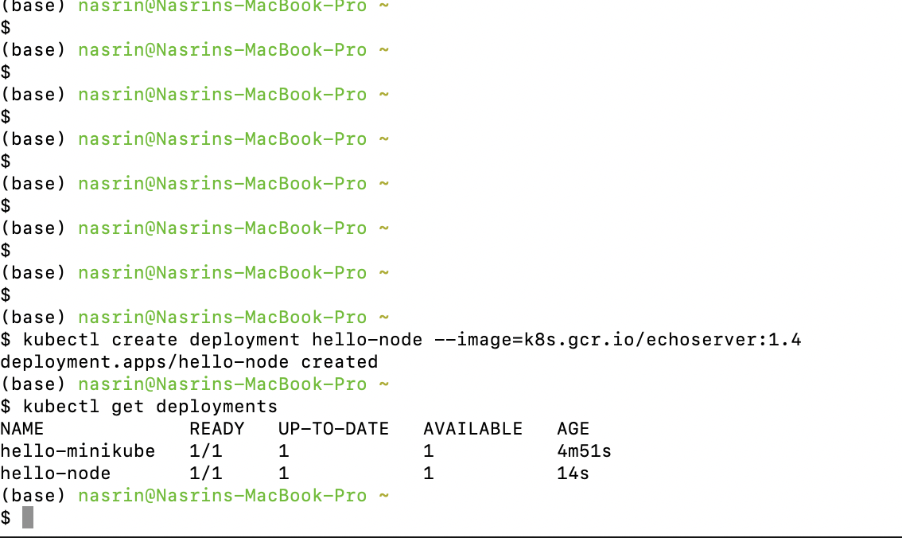
 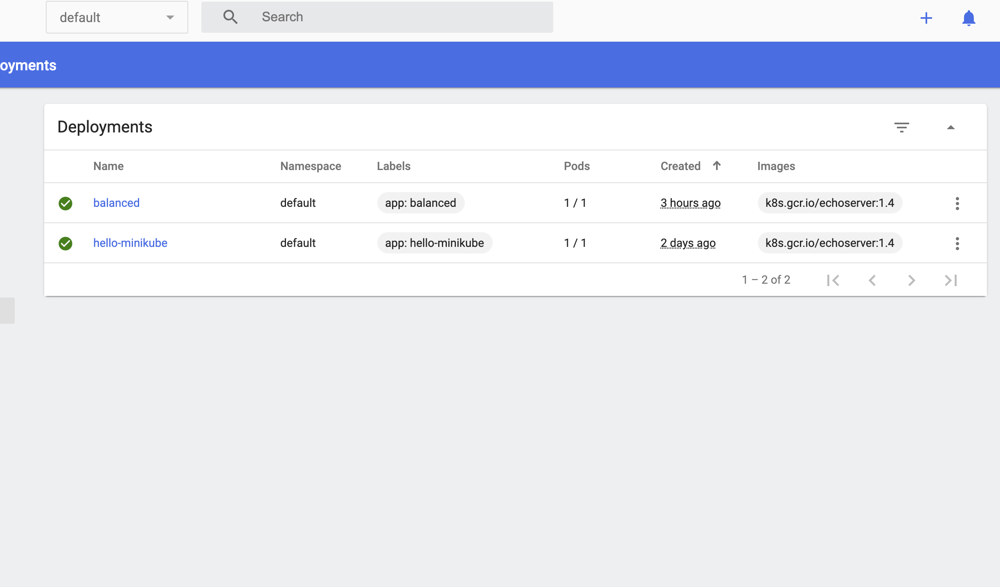
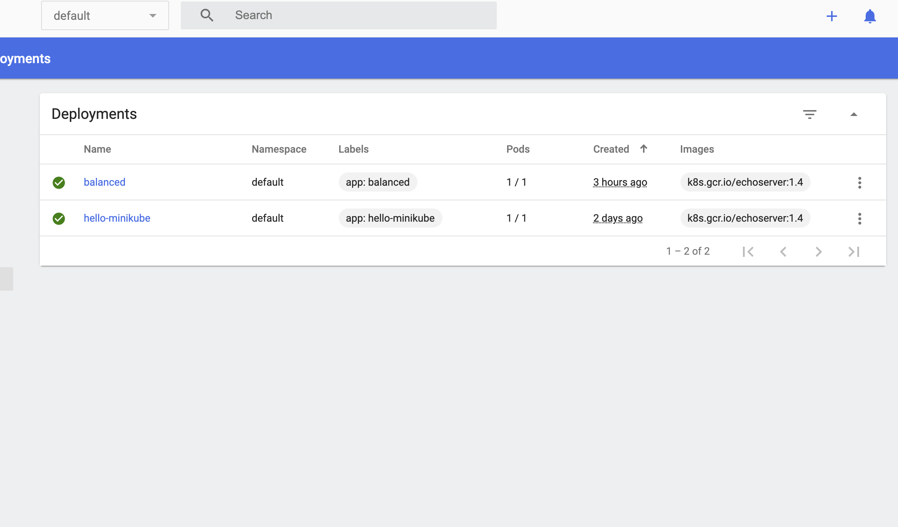
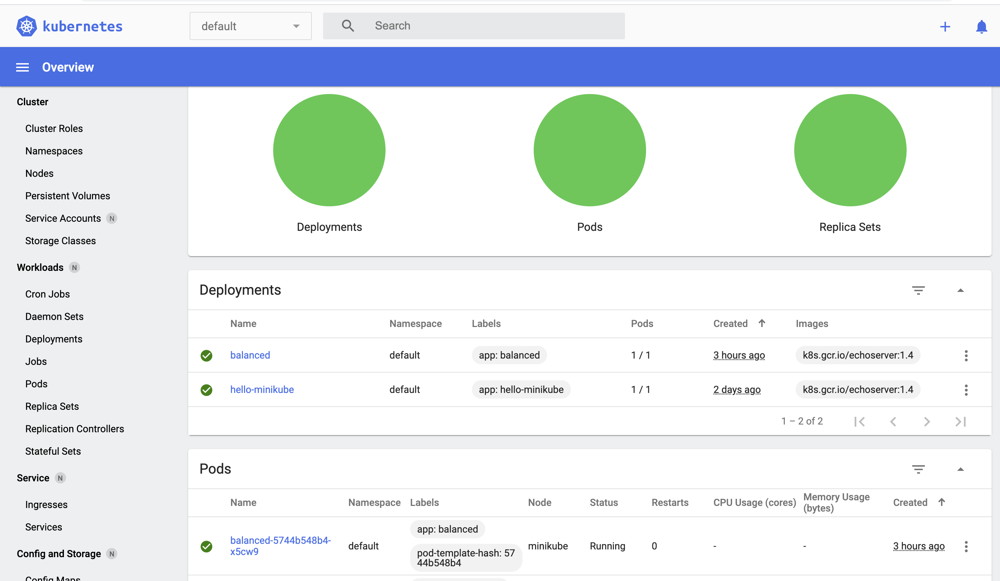 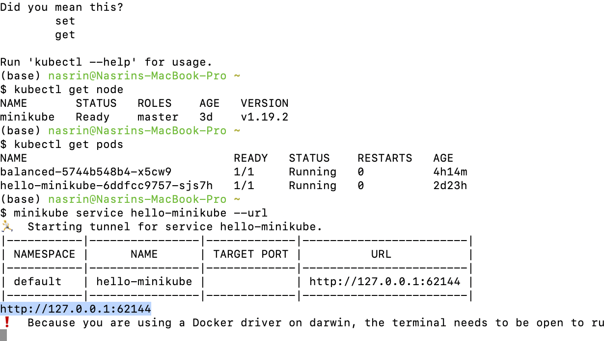 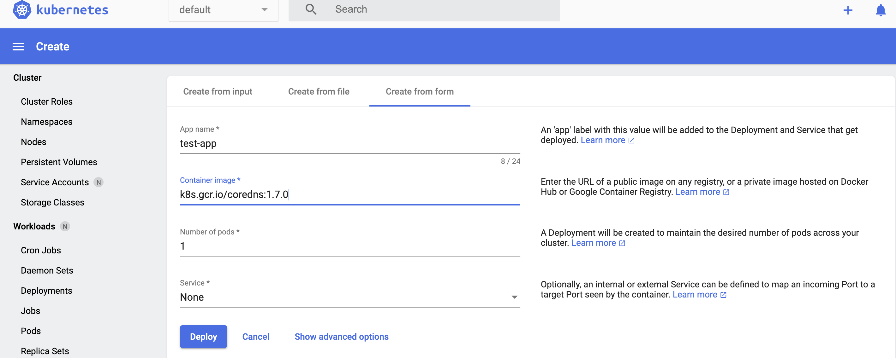
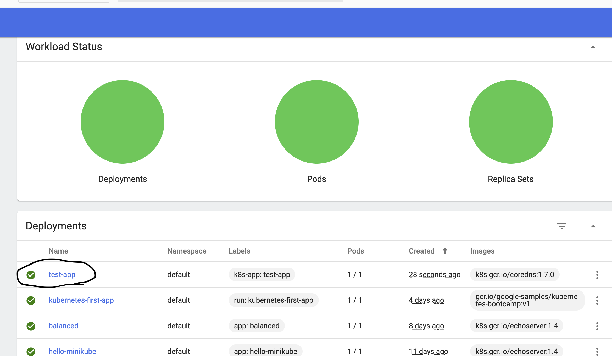
 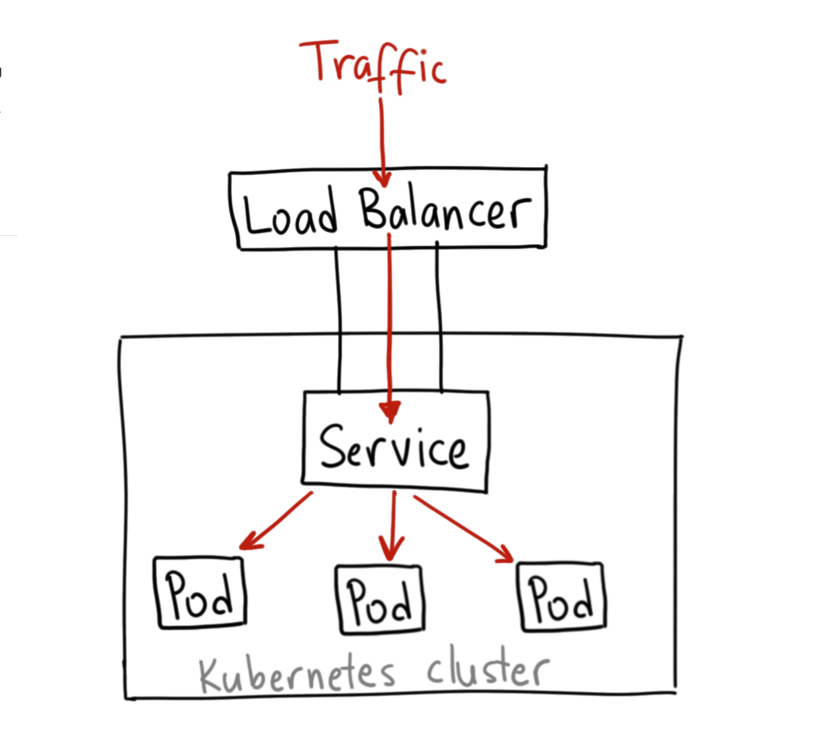
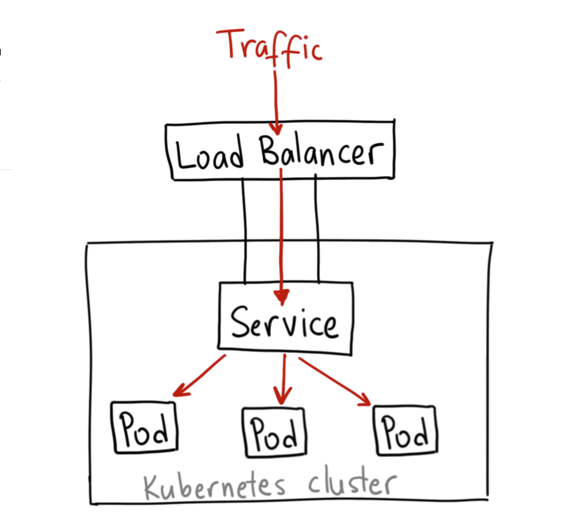
This week we only had one class due to Labor day. I worked on my portfolio in my free time and make some changes.
After finishing the online tutorial, I realised that I still need to have a better understanding on Kubernetes so I tried installing it on my macbook. For installation I ran the "brew install minikube" command to install minikube. I also ran "kubectl version --client" command to ensure the version I installed is up-to-date. I tried to start the minikub by running "minikube start" command and fortunately it worked. After that, I ran the "kubectl get po -A" command to interact with my cluster. To access the dashboard I ran "minikube dashboard". Dashboard can be used instead of Kubernetes kubectl command line.
I started to deploy my first application and expose it on port 8080 by the folloing command "kubectl create deployment hello-minikube --image=k8s.gcr.io/echoserver:1.4 , kubectl expose deployment hello-minikube --type=NodePort --port=8080". I ran the "kubectl get deployments" command to view the deployment.
I ran the "kubectl get services hello-minikube" command to check the cluster name, type, cluster-Ip and port number. Also running "minikube service hello-minikube" command opened service default hello-minikube in default browser. By running "minikube service hello-minikube --url" command, I was able to get url to put it to browser. After running that command I got "http://127.0.0.1:62144" url and in the browser I could see the details of my service. In addition, when I opened the dashboard I could see the Workload Status.
This week I tried to create a kubernetes service type LoadBalancer by running the following command "kubectl create deployment balanced --image=k8s.gcr.io/echoserver:1.4 ,kubectl expose deployment balanced --type=LoadBalancer --port=8080". Load Balancing is important as it allows distribution of multiple tasks over a set of resources. This makes the whole process run more effectively. I opened another window and started the tunnel to create a routable IP for the 'balanced' deployment and for accessing a LoadBalancer deployment I ran "minikube tunnel".
I ran the "kubectl get services balanced" command to find the routable IP. My cluster-ip was "10.110.182.79" and my EXTERNAL-IP was "127.0.0.1".
I ran some more commands to manage my cluster; For instance "minikube pause" to Pause Kubernetes, "minikube stop" to halt the cluster, "minikube config set memory 16384" to increase default memory limit and "minikube delete --all" to delete all of the clusters.
I tried to learn working with dashboard. I used dashboard to deploy a containerized application to a cluster. I specified the application details such as the app name. I chose test-app for the name of my app, and I chose k8s.gcr.io/coredns:1.7.0 for the Container image. I put the 1 for Number of pods, and then clicked on Deploy button which created the new application.
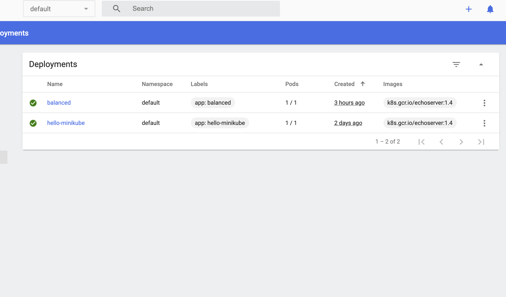
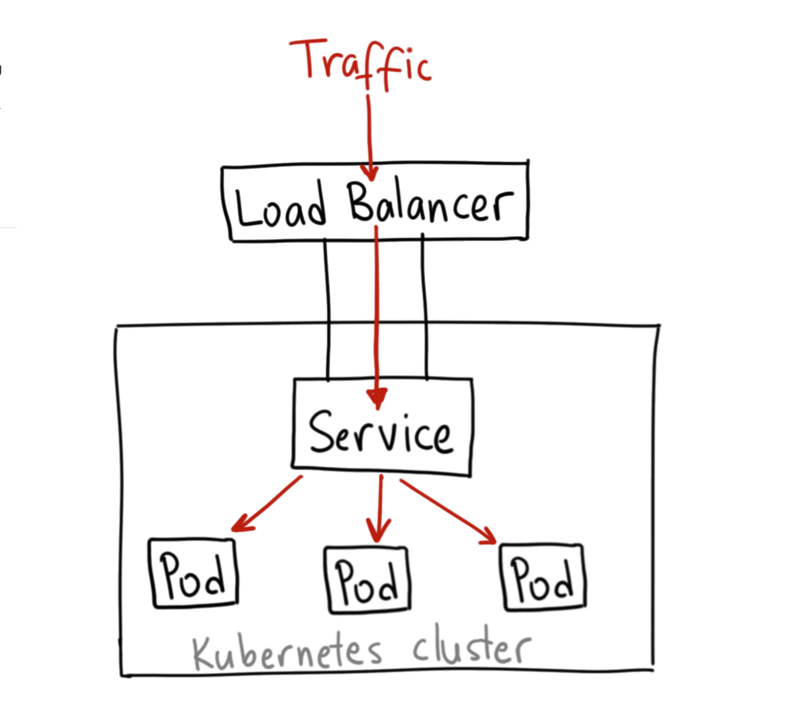
I tried to do kubernetes in a different device to make sure I understand kubernetes very well. In conclusion, starting my learning from the first step helped me to be more confident. I was able to learn many commands such as minikube dashboard, minikub tunnel, kubectl, getting services balanced and etc. These were all important and useful for running kubernetes.